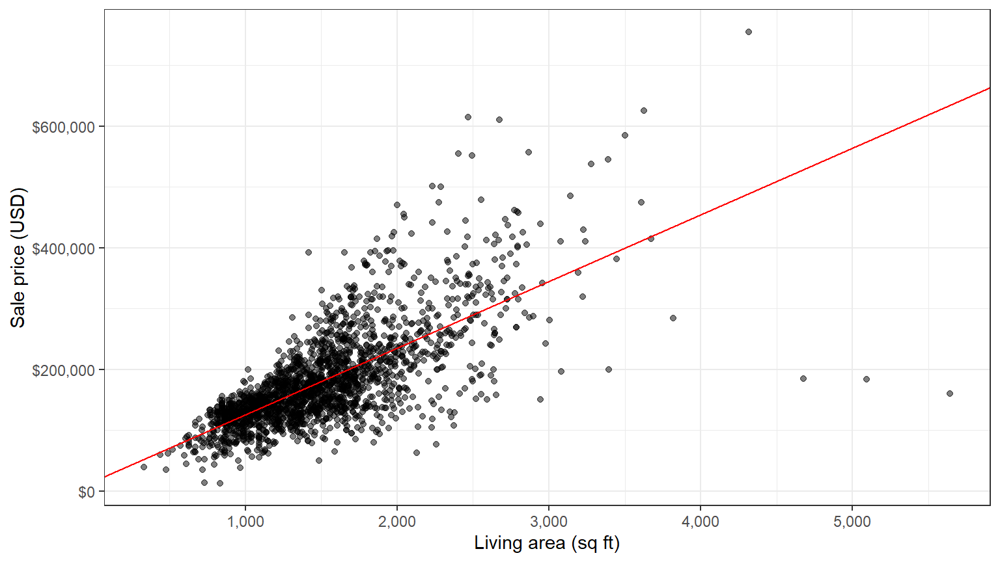
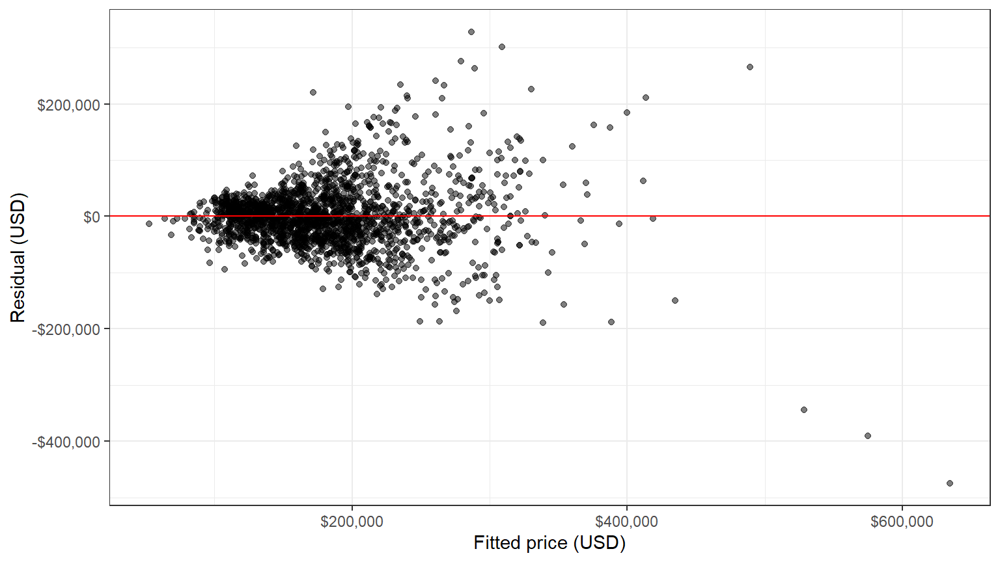
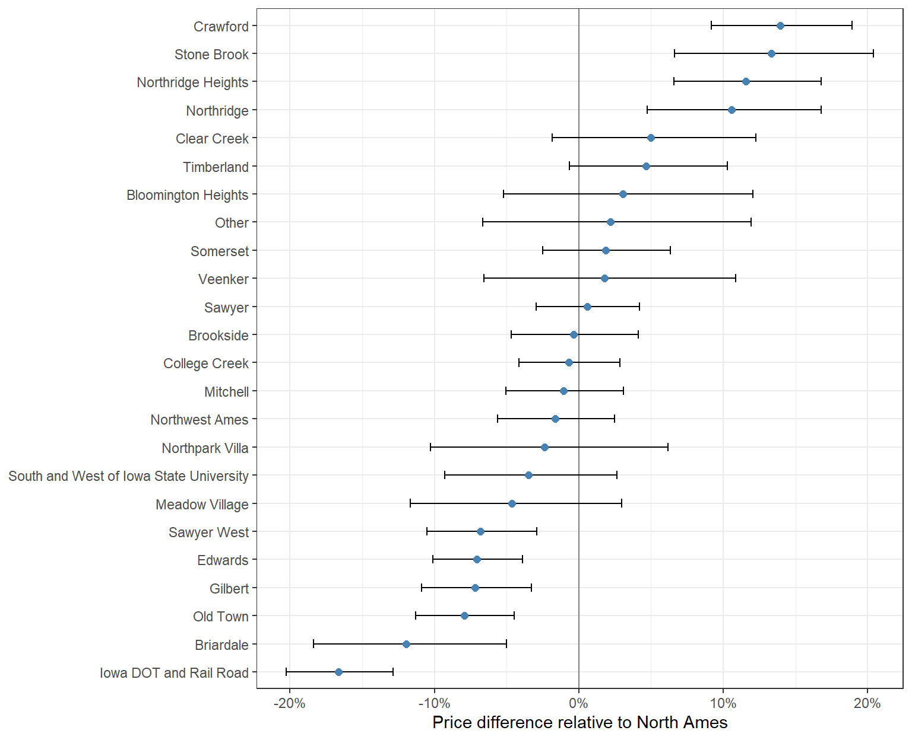
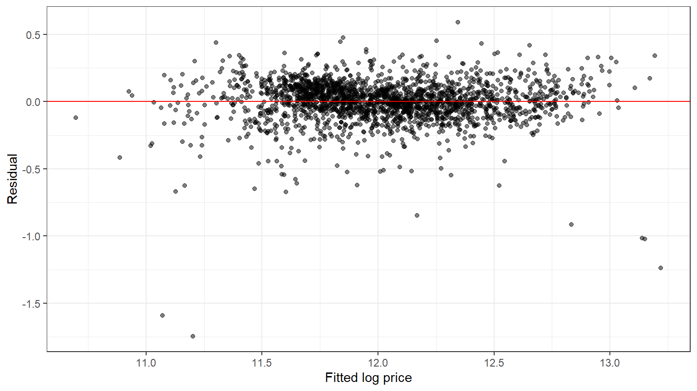
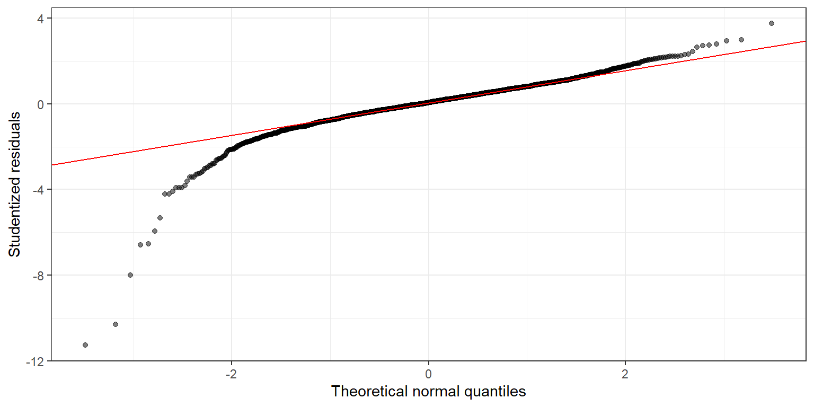
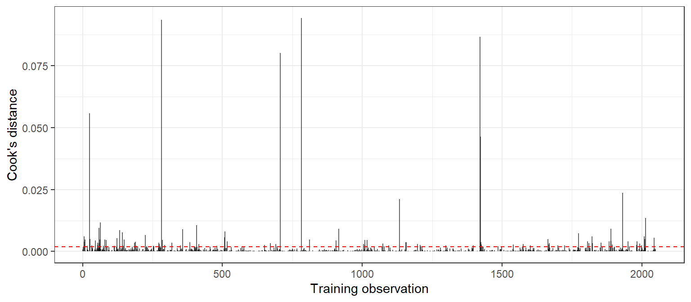
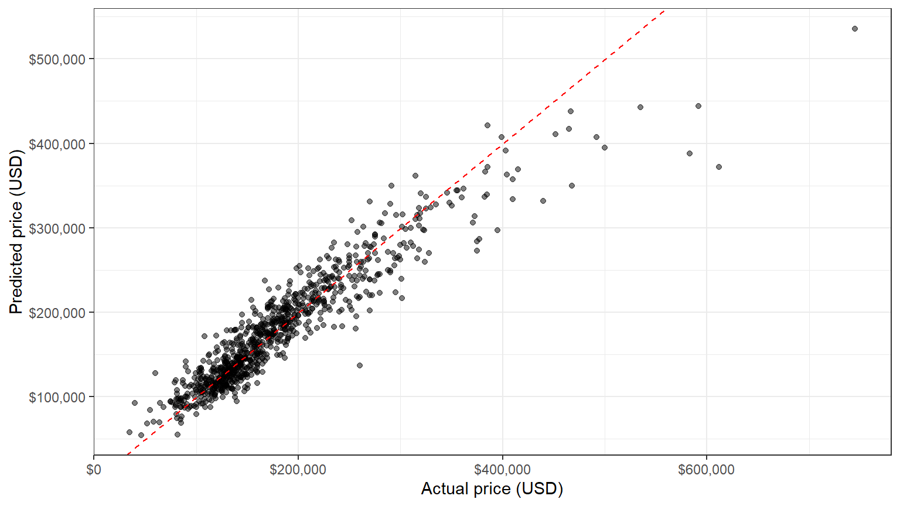
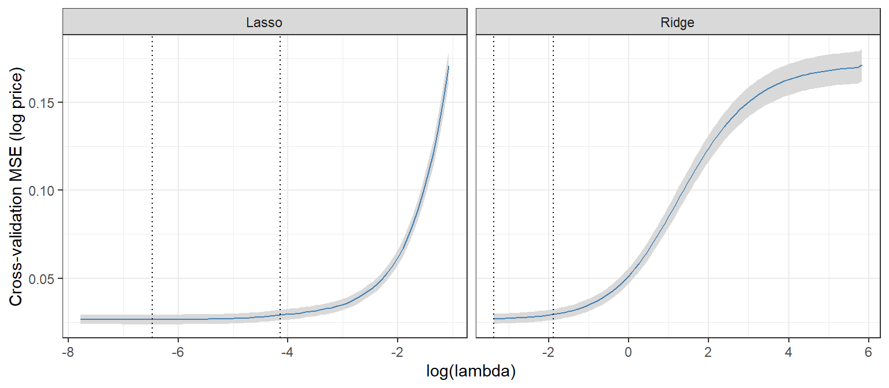
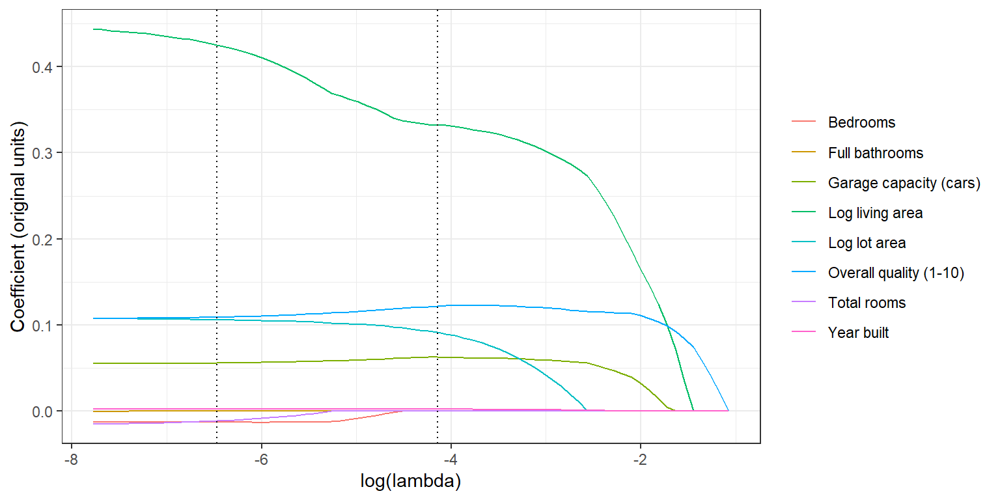

Code
source("R/setup.R")
library(broom)All models on this page are estimated on the training set (2,049 houses). The test set (881 houses) is used only to evaluate predictions.
The first model explains the sale price with living area alone:
\[ \text{Sale\_Price}_i = \beta_0 + \beta_1 \, \text{Gr\_Liv\_Area}_i + \varepsilon_i \]
| Term | Estimate | Std. error | t statistic | p-value |
|---|---|---|---|---|
| Intercept | 15,938.17 | 3,851.85 | 4.14 | <0.001 |
| Living area (sq ft) | 109.67 | 2.42 | 45.30 | <0.001 |
ggplot(train, aes(x = Gr_Liv_Area, y = Sale_Price)) +
geom_point(alpha = 0.5) +
geom_abline(intercept = coef(model_simple)[1], slope = coef(model_simple)[2],
color = "red") +
scale_x_continuous(labels = scales::label_comma()) +
scale_y_continuous(labels = scales::label_dollar()) +
labs(x = "Living area (sq ft)", y = "Sale price (USD)")
The houses are scattered around an upward-sloping line, which confirms the positive relationship estimated by the model.

The residuals fan out as the fitted price grows: the model’s errors are larger for expensive houses. This is the heteroscedasticity already visible in the exploratory analysis. It motivates the next model, which uses the log of the price and adds the other predictors.
The 3 points at the bottom right are houses with more than 4,000 sq ft of living area that sold for less than $200,000. In the full data there are 3 such houses, and 3 of them are partial sales (the house was not completed when it was last assessed). De Cock (2011) points them out as unusual sales; they are examined in the outlier analysis below.
The second model explains the log of the price with all nine predictors. Living area and lot area enter in logs, overall quality as its 1-10 rank, and neighborhood as a set of dummy variables with North Ames, the neighborhood with the most sales, as the reference:
\[ \begin{aligned} \ln(\text{Sale\_Price}_i) = \; & \beta_0 + \beta_1 \ln(\text{Gr\_Liv\_Area}_i) + \beta_2 \, \text{Overall\_Qual}_i + \beta_3 \, \text{Garage\_Cars}_i + \beta_4 \, \text{Full\_Bath}_i \ & + \beta_5 \, \text{Bedroom\_AbvGr}_i + \beta_6 \, \text{TotRms\_AbvGrd}_i + \beta_7 \ln(\text{Lot\_Area}_i) + \beta_8 \, \text{Year\_Built}_i \ & + \textstyle\sum_j \gamma_j \, \text{Neighborhood}_{ij} + \varepsilon_i \end{aligned} \]
Neighborhoods with fewer than 10 sales in the training set (Blueste, Green Hills, Greens, Landmark) are grouped into an “Other” category (14 training houses), because a coefficient estimated from a handful of sales would be very imprecise. The rare neighborhoods are identified on the training set only.
log_formula <- ln_Sale_Price ~ ln_Gr_Liv_Area + Overall_Qual_num + Garage_Cars +
Full_Bath + Bedroom_AbvGr + TotRms_AbvGrd + ln_Lot_Area + Year_Built +
Neighborhood_grp
model_log <- lm(log_formula, data = train)
fit_log <- glance(model_log)
coef_log <- tidy(model_log, conf.int = TRUE)
# Coefficient lookup and its effect on price in percent:
# for a log predictor, the % change in price for a 1% increase (elasticity);
# for any other predictor, the % change for a one-unit increase, exp(b) - 1.
b <- function(term) coef_log$estimate[coef_log$term == term]
pct_effect <- function(term, digits = 1) fmt_pct(exp(b(term)) - 1, digits)
p_val <- function(term) {
format.pval(coef_log$p.value[coef_log$term == term], digits = 2, eps = 0.001)
}labels <- c(
ln_Gr_Liv_Area = "Log living area",
Overall_Qual_num = "Overall quality (1-10)",
Garage_Cars = "Garage capacity (cars)",
Full_Bath = "Full bathrooms",
Bedroom_AbvGr = "Bedrooms",
TotRms_AbvGrd = "Total rooms",
ln_Lot_Area = "Log lot area",
Year_Built = "Year built"
)
coef_log |>
filter(term %in% names(labels)) |>
mutate(
Effect = ifelse(startsWith(term, "ln_"),
paste0(fmt_num(estimate, 2), "% per 1% increase"),
paste0(fmt_pct(exp(estimate) - 1, 1), " per unit")),
term = labels[term],
p.value = format.pval(p.value, digits = 2, eps = 0.001)
) |>
select(term, estimate, std.error, statistic, p.value, Effect) |>
knitr::kable(digits = 4,
col.names = c("Term", "Estimate", "Std. error", "t statistic",
"p-value", "Effect on price"))| Term | Estimate | Std. error | t statistic | p-value | Effect on price |
|---|---|---|---|---|---|
| Log living area | 0.4532 | 0.0249 | 18.2066 | <0.001 | 0.45% per 1% increase |
| Overall quality (1-10) | 0.1071 | 0.0044 | 24.4455 | <0.001 | 11.3% per unit |
| Garage capacity (cars) | 0.0550 | 0.0068 | 8.1160 | <0.001 | 5.7% per unit |
| Full bathrooms | -0.0031 | 0.0099 | -0.3172 | 0.751 | -0.3% per unit |
| Bedrooms | -0.0121 | 0.0065 | -1.8670 | 0.062 | -1.2% per unit |
| Total rooms | -0.0163 | 0.0045 | -3.6226 | <0.001 | -1.6% per unit |
| Log lot area | 0.1077 | 0.0105 | 10.2605 | <0.001 | 0.11% per 1% increase |
| Year built | 0.0025 | 0.0003 | 9.0852 | <0.001 | 0.2% per unit |
Because the dependent variable is in logs, the coefficients measure percentage effects on the price, each holding all other predictors constant:
coef_log |>
filter(startsWith(term, "Neighborhood_grp")) |>
mutate(
neighborhood = gsub("_", " ", sub("Neighborhood_grp", "", term)),
effect = exp(estimate) - 1,
low = exp(conf.low) - 1,
high = exp(conf.high) - 1
) |>
ggplot(aes(x = effect, y = reorder(neighborhood, effect))) +
geom_vline(xintercept = 0, color = "grey50") +
geom_errorbarh(aes(xmin = low, xmax = high), height = 0.3) +
geom_point(color = "steelblue", size = 2) +
scale_x_continuous(labels = scales::label_percent()) +
labs(x = "Price difference relative to North Ames", y = NULL)
Location matters even after size, quality and age are accounted for. A house in Crawford sells for about 14% more than an identical house in North Ames, while a house in Iowa DOT and Rail Road sells for about 17% less. For 14 of the 24 neighborhood categories, the difference from North Ames is not statistically significant at the 5% level: their confidence intervals cross zero.
The model explains 85.1% of the variation in log prices (adjusted R² 84.9%), with a residual standard error of 0.161 on the log scale. In dollar terms, a typical house sells between about 15% below and 17% above the model’s prediction (the range is not symmetric because the model works in logs). This R² is not directly comparable with the 50.1% of the simple model, because the dependent variables differ (log price versus price). The two models are compared on the same dollar scale in the test-set evaluation below.
The standard errors in the table assume homoscedastic, independent errors. The diagnostic tests below check these assumptions.
library(lmtest)
library(sandwich)
library(car)
reset_test <- resettest(model_log)
bp_test <- bptest(model_log)
dw_test <- dwtest(model_log)
jb_test <- tseries::jarque.bera.test(residuals(model_log))
verdict <- function(p) ifelse(p < 0.05, "Rejected at 5%", "Not rejected at 5%")
fmt_p <- function(p) format.pval(p, digits = 2, eps = 0.001)
diag_p <- c(reset_test$p.value, bp_test$p.value, dw_test$p.value, jb_test$p.value)
diag_table <- data.frame(
Test = c("Ramsey RESET", "Breusch-Pagan", "Durbin-Watson", "Jarque-Bera"),
Assumption = c("Linear functional form", "Homoscedastic errors",
"No autocorrelation", "Normal errors"),
Statistic = c(reset_test$statistic, bp_test$statistic,
dw_test$statistic, jb_test$statistic),
`p-value` = fmt_p(diag_p),
`Null hypothesis` = verdict(diag_p),
check.names = FALSE
)| Test | Assumption | Statistic | p-value | Null hypothesis | |
|---|---|---|---|---|---|
| RESET | Ramsey RESET | Linear functional form | 11.39 | <0.001 | Rejected at 5% |
| BP | Breusch-Pagan | Homoscedastic errors | 136.07 | <0.001 | Rejected at 5% |
| DW | Durbin-Watson | No autocorrelation | 1.69 | <0.001 | Rejected at 5% |
| X-squared | Jarque-Bera | Normal errors | 24,529.92 | <0.001 | Rejected at 5% |
All four null hypotheses are rejected. None of these results makes the model unusable, but each changes how its output should be read. The sections below take them one at a time.

The log transform removed the strong fan shape of the simple model, but the Breusch-Pagan test still rejects constant error variance (p-value <0.001). Under heteroscedasticity the OLS coefficients are still unbiased, but the usual standard errors are wrong, and so are the t statistics and p-values built on them.
The fix is to keep the coefficients and recompute the standard errors in a way that does not assume constant variance. The table compares three versions:
lm() standard errors.ct_classic <- coeftest(model_log)
ct_hc3 <- coeftest(model_log, vcov = vcovHC(model_log, type = "HC3"))
ct_cl <- coeftest(model_log, vcov = vcovCL(model_log, cluster = ~Neighborhood_grp))
char_terms <- names(labels)
se_table <- data.frame(
Term = labels[char_terms],
Estimate = ct_classic[char_terms, 1],
`SE classical` = ct_classic[char_terms, 2],
`p classical` = fmt_p(ct_classic[char_terms, 4]),
`SE robust` = ct_hc3[char_terms, 2],
`p robust` = fmt_p(ct_hc3[char_terms, 4]),
`SE clustered` = ct_cl[char_terms, 2],
`p clustered` = fmt_p(ct_cl[char_terms, 4]),
check.names = FALSE, row.names = NULL
)
p_rob <- function(term, ct) fmt_p(ct[term, 4])| Term | Estimate | SE classical | p classical | SE robust | p robust | SE clustered | p clustered |
|---|---|---|---|---|---|---|---|
| Log living area | 0.4532 | 0.0249 | <0.001 | 0.0299 | <0.001 | 0.0369 | <0.001 |
| Overall quality (1-10) | 0.1071 | 0.0044 | <0.001 | 0.0074 | <0.001 | 0.0097 | <0.001 |
| Garage capacity (cars) | 0.0550 | 0.0068 | <0.001 | 0.0093 | <0.001 | 0.0093 | <0.001 |
| Full bathrooms | -0.0031 | 0.0099 | 0.751 | 0.0112 | 0.779 | 0.0138 | 0.82 |
| Bedrooms | -0.0121 | 0.0065 | 0.062 | 0.0104 | 0.243 | 0.0173 | 0.48 |
| Total rooms | -0.0163 | 0.0045 | <0.001 | 0.0069 | 0.017 | 0.0110 | 0.14 |
| Log lot area | 0.1077 | 0.0105 | <0.001 | 0.0154 | <0.001 | 0.0209 | <0.001 |
| Year built | 0.0025 | 0.0003 | <0.001 | 0.0004 | <0.001 | 0.0004 | <0.001 |
The robust standard errors are larger than the classical ones, as expected, but living area, quality, garage, lot area and construction year stay significant under every version. The conclusions that change concern the room counts, which were already the weakest effects:
The robust standard errors are the ones to use for inference from this model.
The Durbin-Watson statistic is 1.69 (2 means no autocorrelation), and the test rejects independence. In time series this would mean that errors carry over from one period to the next. These data are a cross-section, so there is no natural order: the test compares each house with the one in the next row of the file.
The order matters. After the rows are shuffled at random, the same model gives a Durbin-Watson statistic of 1.94 (p-value 0.082). The original file is sorted by year of sale and then by parcel number, so consecutive rows are often neighboring houses: 74% of consecutive training houses are in the same neighborhood. The test is therefore picking up spatial correlation: houses close to each other share unobserved features, such as streets, schools or views, and their errors move together. The neighborhood dummies capture part of this; the clustered standard errors above allow for the rest within each neighborhood.

res <- residuals(model_log)
res_skew <- skewness(res)
res_kurt <- mean(((res - mean(res)) / sd(res))^4)
# Sale condition of the training houses (same row order as train)
train_condition <- ames$Sale_Condition[data_split$in_id]
extreme <- abs(rstudent(model_log)) > 3
share_normal_extreme <- mean(train_condition[extreme] == "Normal")
share_normal_all <- mean(train_condition == "Normal")The residuals are far from normal (Jarque-Bera p-value <0.001): their skewness is -2.13 and their kurtosis 19.4, against 0 and 3 for a normal distribution. The Q-Q plot shows why: a long lower tail of houses that sold far below the model’s prediction.
These houses are mostly unusual sales. Of the 25 training houses with a studentized residual beyond ±3, only 24% were normal sales, against 82% in the whole training set. The rest are abnormal sales (such as foreclosures), sales between family members, and partial sales of unfinished houses.
Normality is not needed for the coefficients to be unbiased, and with 2,049 observations the t tests remain approximately valid by the central limit theorem. It matters more for prediction intervals, which assume normal errors (see the scenario forecasts).
The RESET test adds powers of the fitted values to the model and checks whether they improve it. They do (p-value <0.001): some relationships are not fully captured by the log-linear form, for example a price effect of age that is not constant over a century of construction years, or effects of size that differ between neighborhoods. Such extensions are left outside this model, which keeps the specification of the course project. The test-set evaluation below shows how well the model predicts despite this.
vif_table <- vif(model_log)
term_names <- c(labels, Neighborhood_grp = "Neighborhood")
vif_df <- data.frame(Term = term_names[rownames(vif_table)], vif_table,
row.names = NULL, check.names = FALSE)
names(vif_df) <- c("Term", "GVIF", "Df", "GVIF^(1/(2 Df))")
knitr::kable(vif_df, digits = 2)
vif_single <- sort(vif_table[vif_table[, "Df"] == 1, "GVIF"], decreasing = TRUE)| Term | GVIF | Df | GVIF^(1/(2 Df)) |
|---|---|---|---|
| Log living area | 5.31 | 1 | 2.30 |
| Overall quality (1-10) | 3.09 | 1 | 1.76 |
| Garage capacity (cars) | 2.11 | 1 | 1.45 |
| Full bathrooms | 2.37 | 1 | 1.54 |
| Bedrooms | 2.31 | 1 | 1.52 |
| Total rooms | 4.19 | 1 | 2.05 |
| Log lot area | 2.26 | 1 | 1.50 |
| Year built | 5.33 | 1 | 2.31 |
| Neighborhood | 19.77 | 24 | 1.06 |
The variance inflation factor measures how much the variance of a coefficient grows because its variable is correlated with the other predictors. The largest values are for year built (5.3) and log living area (5.3), followed by the number of rooms (4.2). All are below the common warning threshold of 10, so multicollinearity is moderate: it makes the separate effects of living area and rooms less precise, as seen above, but does not distort the model.
cooks <- cooks.distance(model_log)
cook_cutoff <- 4 / nrow(train)
ggplot(data.frame(i = seq_along(cooks), d = cooks), aes(x = i, y = d)) +
geom_segment(aes(xend = i, yend = 0), alpha = 0.6) +
geom_hline(yintercept = cook_cutoff, linetype = "dashed", color = "red") +
labs(x = "Training observation", y = "Cook's distance")
Cook’s distance measures how much all fitted values change when one house is left out. 112 houses exceed the 4/n rule of thumb (0.0020), but the largest distance is only 0.094, far below 1, the level at which a single observation would dominate the estimates.
Robustness check. The three very large houses sold below $200,000 (all partial sales) are the clearest outliers. The model is re-estimated without them:
model_log_no3 <- lm(log_formula,
data = filter(train, !(Gr_Liv_Area > 4000 & Sale_Price < 200000)))
robust_check <- data.frame(
Term = labels[char_terms],
`All houses` = coef(model_log)[char_terms],
`Without the 3 houses` = coef(model_log_no3)[char_terms],
check.names = FALSE, row.names = NULL
)
robust_check$Change <- robust_check[[3]] - robust_check[[2]]| Term | All houses | Without the 3 houses | Change |
|---|---|---|---|
| Log living area | 0.4532 | 0.4745 | 0.0213 |
| Overall quality (1-10) | 0.1071 | 0.1115 | 0.0044 |
| Garage capacity (cars) | 0.0550 | 0.0505 | -0.0045 |
| Full bathrooms | -0.0031 | -0.0072 | -0.0040 |
| Bedrooms | -0.0121 | -0.0261 | -0.0140 |
| Total rooms | -0.0163 | -0.0097 | 0.0067 |
| Log lot area | 0.1077 | 0.1235 | 0.0159 |
| Year built | 0.0025 | 0.0029 | 0.0004 |
Removing 3 of 2,049 houses raises the living area elasticity from 0.453 to 0.474 and R² from 85.1% to 86.3%. All coefficients of the house characteristics keep their sign and order of magnitude, so the conclusions do not depend on these houses. The main model keeps them, because similar sales can occur in practice.
The models were estimated on the training set. Their real test is how well they predict the 881 houses of the test set, which they have not seen. All errors are measured in dollars, the scale that matters to a buyer, a seller or a lender.
The multiple regression predicts the log of the price. Taking the exponential of a log prediction gives a median price, not a mean: because \(E[e^{\varepsilon}] > 1\), simply exponentiating underestimates the average price. The smearing estimator of Duan (1983) corrects this by multiplying every prediction by the average of the exponentiated training residuals:
\[ \widehat{\text{Sale\_Price}} = e^{\widehat{\ln \text{Sale\_Price}}} \times \frac{1}{n} \sum_{i=1}^{n} e^{\hat\varepsilon_i} \]
smearing <- mean(exp(residuals(model_log)))
y_test <- test$Sale_Price
pred_test <- list(
`Baseline (training mean)` = rep(mean(train$Sale_Price), nrow(test)),
`Simple regression` = predict(model_simple, newdata = test),
`Log model, no correction` = exp(predict(model_log, newdata = test)),
`Log model, smearing` = exp(predict(model_log, newdata = test)) * smearing
)
metrics <- function(pred, actual = y_test) {
err <- pred - actual
c(RMSE = sqrt(mean(err^2)),
MAE = mean(abs(err)),
MAPE = mean(abs(err) / actual),
R2 = 1 - sum(err^2) / sum((actual - mean(actual))^2),
`Mean error` = mean(err))
}
eval_table <- t(sapply(pred_test, metrics))
ev <- function(model, metric) eval_table[model, metric]
log_pred <- pred_test[["Log model, smearing"]]
# Same metrics on the training set, for the overfitting check
train_metrics <- metrics(exp(fitted(model_log)) * smearing, train$Sale_Price)The smearing factor is 1.0117: predictions from the log model are raised by 1.2%.
| RMSE | MAE | MAPE | R² | Mean error | |
|---|---|---|---|---|---|
| Baseline (training mean) | 78,816 | 57,283 | 35.8% | 0.0% | 421 |
| Simple regression | 55,942 | 37,722 | 22.0% | 49.6% | -1,299 |
| Log model, no correction | 28,438 | 18,799 | 10.7% | 87.0% | -3,739 |
| Log model, smearing | 28,079 | 18,700 | 10.8% | 87.3% | -1,669 |
On the training set, the same model has an RMSE of $31,015 and an R² in dollars of 85.1%. The test-set errors are not larger, so the model does not overfit: it predicts new houses about as well as the houses it was estimated on. (The training errors are even slightly larger, because the training set contains the extreme outliers discussed above.)
ggplot(data.frame(actual = y_test, predicted = log_pred),
aes(x = actual, y = predicted)) +
geom_point(alpha = 0.5) +
geom_abline(slope = 1, intercept = 0, linetype = "dashed", color = "red") +
scale_x_continuous(labels = scales::label_dollar()) +
scale_y_continuous(labels = scales::label_dollar()) +
labs(x = "Actual price (USD)", y = "Predicted price (USD)")
An average error can hide segments where the model works poorly. The test houses are split into four groups by their actual price:
quartile <- cut(y_test, quantile(y_test, 0:4 / 4), include.lowest = TRUE,
labels = c("Q1 (cheapest)", "Q2", "Q3", "Q4 (most expensive)"))
segment_errors <- data.frame(quartile, actual = y_test, pred = log_pred) |>
group_by(`Price quartile` = quartile) |>
summarise(
Houses = n(),
`Price range (USD)` = paste(fmt_usd(min(actual)), "-", fmt_usd(max(actual))),
`MAE (USD)` = mean(abs(pred - actual)),
MAPE = fmt_pct(mean(abs(pred - actual) / actual)),
`Mean error (USD)` = mean(pred - actual)
)
knitr::kable(segment_errors, digits = 0, format.args = list(big.mark = ","))
seg_err <- function(i, col) segment_errors[[col]][i]
# Share of unusual sales (neither normal nor partial) in each price quartile
test_condition <- ames$Sale_Condition[-data_split$in_id]
unusual_share <- tapply(!(test_condition %in% c("Normal", "Partial")), quartile, mean)| Price quartile | Houses | Price range (USD) | MAE (USD) | MAPE | Mean error (USD) |
|---|---|---|---|---|---|
| Q1 (cheapest) | 222 | $35,000 - $129,500 | 13,941 | 14.4% | 5,832 |
| Q2 | 219 | $130,000 - $160,000 | 14,969 | 10.3% | -654 |
| Q3 | 220 | $160,500 - $213,500 | 15,615 | 8.5% | 5,658 |
| Q4 (most expensive) | 220 | $213,750 - $745,000 | 30,303 | 9.7% | -17,576 |
For a valuation or lending use, this means the model’s estimates are most reliable for mid-priced houses and should be treated with more caution at both ends of the market.
The model can price hypothetical houses. Three scenarios are built from the training data: a modest house with the 25th percentile of every numeric characteristic, a typical house with the median, and an upscale house with the 75th percentile. Each is placed in a neighborhood that fits its profile: Old Town, North Ames and Northridge Heights. All three combinations are within the range of the data, so the model is not extrapolating.
numeric_inputs <- c("Gr_Liv_Area", "Overall_Qual_num", "Garage_Cars", "Full_Bath",
"Bedroom_AbvGr", "TotRms_AbvGrd", "Lot_Area", "Year_Built")
scenario_names <- c("Modest", "Typical", "Upscale")
# type = 1 returns observed values, so counts stay whole numbers
scenarios <- as.data.frame(sapply(numeric_inputs, function(v) {
quantile(train[[v]], c(0.25, 0.50, 0.75), type = 1)
}))
scenarios$Neighborhood_grp <- factor(c("Old_Town", "North_Ames", "Northridge_Heights"),
levels = levels(train$Neighborhood_grp))
scenarios <- mutate(scenarios,
ln_Gr_Liv_Area = log(Gr_Liv_Area),
ln_Lot_Area = log(Lot_Area))
rownames(scenarios) <- scenario_namesscenarios |>
transmute(
`Living area (sq ft)` = fmt_num(Gr_Liv_Area),
`Quality (1-10)` = Overall_Qual_num,
`Garage (cars)` = Garage_Cars,
`Full baths` = Full_Bath,
Bedrooms = Bedroom_AbvGr,
Rooms = TotRms_AbvGrd,
`Lot (sq ft)` = fmt_num(Lot_Area),
`Year built` = Year_Built,
Neighborhood = gsub("_", " ", Neighborhood_grp)
) |>
knitr::kable(align = "r")| Living area (sq ft) | Quality (1-10) | Garage (cars) | Full baths | Bedrooms | Rooms | Lot (sq ft) | Year built | Neighborhood | |
|---|---|---|---|---|---|---|---|---|---|
| Modest | 1,128 | 5 | 1 | 1 | 2 | 5 | 7,438 | 1953 | Old Town |
| Typical | 1,441 | 6 | 2 | 2 | 3 | 6 | 9,399 | 1973 | North Ames |
| Upscale | 1,740 | 7 | 2 | 2 | 3 | 7 | 11,512 | 2001 | Northridge Heights |
A point prediction is not enough for decisions: a lender or a buyer also needs to know how far the actual price could be from it. A 95% prediction interval gives the range that should contain the sale price of a single new house 95% of the time. It is much wider than a confidence interval for the average price, because it includes the house’s own random deviation.
Two versions are compared:
predict(), which assumes normal errors. On the log scale it is \(\hat y \pm t_{0.975} \cdot \text{SE}\), and the bounds are exponentiated.resid_q <- quantile(residuals(model_log), c(0.025, 0.975))
interval_preds <- function(newdata) {
p <- predict(model_log, newdata = newdata, interval = "prediction", level = 0.95)
data.frame(
median = exp(p[, "fit"]),
mean = exp(p[, "fit"]) * smearing,
normal_low = exp(p[, "lwr"]),
normal_high = exp(p[, "upr"]),
emp_low = exp(p[, "fit"] + resid_q[1]),
emp_high = exp(p[, "fit"] + resid_q[2])
)
}
scenario_preds <- interval_preds(scenarios)
rownames(scenario_preds) <- scenario_names
# Coverage on the test set: share of actual prices inside each interval
test_preds <- interval_preds(test)
coverage_normal <- mean(y_test >= test_preds$normal_low & y_test <= test_preds$normal_high)
coverage_emp <- mean(y_test >= test_preds$emp_low & y_test <= test_preds$emp_high)
width_normal <- mean(test_preds$normal_high - test_preds$normal_low)
width_emp <- mean(test_preds$emp_high - test_preds$emp_low)
sp <- function(name, col) fmt_usd(scenario_preds[name, col], 0)data.frame(
`Median price` = fmt_usd(scenario_preds$median),
`Mean price (smearing)` = fmt_usd(scenario_preds$mean),
`95% interval, normal` = paste(fmt_usd(scenario_preds$normal_low), "-",
fmt_usd(scenario_preds$normal_high)),
`95% interval, empirical` = paste(fmt_usd(scenario_preds$emp_low), "-",
fmt_usd(scenario_preds$emp_high)),
row.names = scenario_names, check.names = FALSE
) |>
knitr::kable(align = "r")| Median price | Mean price (smearing) | 95% interval, normal | 95% interval, empirical | |
|---|---|---|---|---|
| Modest | $114,949 | $116,295 | $83,716 - $157,834 | $83,020 - $151,026 |
| Typical | $171,282 | $173,287 | $124,823 - $235,033 | $123,706 - $225,039 |
| Upscale | $249,614 | $252,537 | $181,765 - $342,790 | $180,281 - $327,957 |
Do the intervals keep their promise? On the test set, the normal 95% intervals contain 96.9% of the actual prices, and the empirical intervals contain 95.5%. The normal intervals cover more than 95% because the heavy tails of the residuals inflate the estimated error variance, which makes the intervals wider than necessary for most houses. The empirical intervals are closer to their nominal 95% and narrower on average ($104,576 against $114,403), so they are the better choice for this model.
OLS chooses the coefficients that fit the training data best. With many correlated predictors this can lead to unstable coefficients that fit noise. Regularized regressions add a penalty on the size of the coefficients, which shrinks them towards zero:
The strength of the penalty, \(\lambda\), is chosen by 10-fold cross-validation on the training set: the training data are split into 10 parts, each model is fitted on 9 parts and tested on the tenth, and the \(\lambda\) with the lowest average error is kept (lambda.min). A common, more conservative alternative is the largest \(\lambda\) whose error is within one standard error of the minimum (lambda.1se), which gives a simpler model.
Both models use the same predictors as the multiple OLS regression, with neighborhoods as dummy variables, and the same log price. All three methods use the same 10 folds, so their cross-validation errors are directly comparable. The test set is not used until the final comparison.
library(glmnet)
# Predictor matrices with the same columns as the OLS model (glmnet
# standardizes them internally)
x_train <- model.matrix(log_formula, data = train)[, -1]
x_test <- model.matrix(log_formula, data = test)[, -1]
y_train <- train$ln_Sale_Price
set.seed(SEED)
fold_id <- sample(rep(1:10, length.out = nrow(train)))
cv_ridge <- cv.glmnet(x_train, y_train, alpha = 0, foldid = fold_id)
cv_lasso <- cv.glmnet(x_train, y_train, alpha = 1, foldid = fold_id)
# Cross-validation error of OLS on the same folds
ols_cv_mse <- sapply(1:10, function(k) {
fit <- lm(log_formula, data = train[fold_id != k, ])
held_out <- train[fold_id == k, ]
mean((held_out$ln_Sale_Price - predict(fit, newdata = held_out))^2)
})cv_curve <- function(cv, name) {
data.frame(model = name, log_lambda = log(cv$lambda), mse = cv$cvm,
low = cv$cvlo, high = cv$cvup,
min = log(cv$lambda.min), se1 = log(cv$lambda.1se))
}
cv_df <- rbind(cv_curve(cv_ridge, "Ridge"), cv_curve(cv_lasso, "Lasso"))
ggplot(cv_df, aes(x = log_lambda, y = mse)) +
geom_ribbon(aes(ymin = low, ymax = high), fill = "grey85") +
geom_line(color = "steelblue") +
geom_vline(aes(xintercept = min), linetype = "dotted") +
geom_vline(aes(xintercept = se1), linetype = "dotted") +
facet_wrap(~model, scales = "free_x") +
labs(x = "log(lambda)", y = "Cross-validation MSE (log price)")
path <- cv_lasso$glmnet.fit
path_df <- do.call(rbind, lapply(names(labels), function(v) {
data.frame(term = labels[[v]], log_lambda = log(path$lambda),
coef = as.numeric(path$beta[v, ]))
}))
ggplot(path_df, aes(x = log_lambda, y = coef, color = term)) +
geom_line() +
geom_vline(xintercept = log(cv_lasso$lambda.min), linetype = "dotted") +
geom_vline(xintercept = log(cv_lasso$lambda.1se), linetype = "dotted") +
labs(x = "log(lambda)", y = "Coefficient (original units)", color = NULL)
lambda.min, Lasso keeps 28 of the 32 predictors and sets 4 to zero, including the number of full bathrooms, whose OLS coefficient was not significant either.lambda.1se, it keeps only 11. Among the house characteristics it drops full bathrooms, bedrooms, total rooms: the room counts that duplicate the information in living area. Most neighborhood dummies are dropped as well.This agrees with the OLS diagnostics: the room counts are the weakest and least robust predictors once living area is in the model.
# Back to dollars with each model's own smearing factor
dollar_preds <- function(log_pred_test, log_fit_train) {
exp(log_pred_test) * mean(exp(y_train - log_fit_train))
}
glmnet_pred <- function(cv, s) {
dollar_preds(predict(cv, x_test, s = s)[, 1], predict(cv, x_train, s = s)[, 1])
}
cv_rmse <- function(cv, s) sqrt(cv$cvm[cv$lambda == cv[[s]]])
comparison <- data.frame(
Model = c("OLS", "Ridge (lambda.min)", "Ridge (lambda.1se)",
"Lasso (lambda.min)", "Lasso (lambda.1se)"),
Predictors = c(n_pred, n_pred, n_pred,
sum(lasso_min_coef != 0), sum(lasso_1se_coef != 0)),
`CV RMSE (log)` = c(sqrt(mean(ols_cv_mse)),
cv_rmse(cv_ridge, "lambda.min"), cv_rmse(cv_ridge, "lambda.1se"),
cv_rmse(cv_lasso, "lambda.min"), cv_rmse(cv_lasso, "lambda.1se")),
check.names = FALSE
)
test_dollar <- list(
log_pred,
glmnet_pred(cv_ridge, "lambda.min"), glmnet_pred(cv_ridge, "lambda.1se"),
glmnet_pred(cv_lasso, "lambda.min"), glmnet_pred(cv_lasso, "lambda.1se")
)
comparison <- cbind(comparison, t(sapply(test_dollar, metrics))[, c("RMSE", "MAE", "MAPE")])
cmp <- function(model, col) comparison[comparison$Model == model, col]| Model | Predictors | CV RMSE (log) | Test RMSE | Test MAE | Test MAPE |
|---|---|---|---|---|---|
| OLS | 32 | 0.1630 | $28,079 | $18,700 | 10.8% |
| Ridge (lambda.min) | 32 | 0.1640 | $29,014 | $18,931 | 10.8% |
| Ridge (lambda.1se) | 32 | 0.1715 | $32,476 | $20,240 | 11.3% |
| Lasso (lambda.min) | 28 | 0.1627 | $28,221 | $18,798 | 10.8% |
| Lasso (lambda.1se) | 11 | 0.1705 | $31,420 | $20,587 | 11.6% |
Regularization does not improve on OLS here. On the test set, the best regularized model, Lasso with lambda.min, has an RMSE of $28,221 against $28,079 for OLS, a difference of 0.5%. In cross-validation on the training set the two are practically tied (CV RMSE 0.1627 for Lasso against 0.1630 for OLS), and Ridge is slightly worse on both measures.
This is expected. Regularization helps when there are many predictors relative to the number of observations, or when predictors are so correlated that OLS becomes unstable. Here there are 2,049 training houses for 32 predictors, and the VIFs showed only moderate multicollinearity, so OLS is already stable and the penalty has little to correct.
The simpler Lasso with lambda.1se is still useful as a trade-off: it uses 11 predictors instead of 32 and its test MAPE is 11.6% against 10.8% for OLS. For explaining and predicting prices, the OLS model with robust standard errors remains the main model.
---
title: "Regression Models"
---
```{r}
#| label: setup
source("R/setup.R")
library(broom)
```
All models on this page are estimated on the training set
(`r fmt_num(nrow(train))` houses). The test set
(`r fmt_num(nrow(test))` houses) is used only to evaluate predictions.
## Simple regression: price and living area
The first model explains the sale price with living area alone:
$$
\text{Sale\_Price}_i = \beta_0 + \beta_1 \, \text{Gr\_Liv\_Area}_i + \varepsilon_i
$$
```{r}
#| label: model-simple
model_simple <- lm(Sale_Price ~ Gr_Liv_Area, data = train)
fit_simple <- glance(model_simple)
coef_simple <- tidy(model_simple)
b1 <- coef_simple$estimate[coef_simple$term == "Gr_Liv_Area"]
```
```{r}
#| label: tbl-simple
#| tbl-cap: "Simple regression of sale price on living area (training set)"
coef_simple |>
mutate(term = c("Intercept", "Living area (sq ft)"),
p.value = format.pval(p.value, digits = 3, eps = 0.001)) |>
knitr::kable(digits = 2, format.args = list(big.mark = ","),
col.names = c("Term", "Estimate", "Std. error", "t statistic", "p-value"))
```
- **Slope.** Each additional square foot of living area is associated with a
sale price higher by `r fmt_usd(b1, 2)` on average, or about
`r fmt_usd(100 * b1)` for 100 sq ft. This is an association, not a causal
effect: larger houses also tend to differ in quality, age and location.
- **Significance.** The t statistic of the slope is
`r fmt_num(coef_simple$statistic[2], 1)` (p-value
`r format.pval(coef_simple$p.value[2], eps = 0.001)`), so the relationship
is statistically significant.
- **Intercept.** The intercept (`r fmt_usd(coef_simple$estimate[1])`) would be
the price of a house with no living area. It has no economic meaning and
only positions the line.
- **Fit.** Living area alone explains `r fmt_pct(fit_simple$r.squared)` of the
variation in sale prices (R², adjusted R²
`r fmt_pct(fit_simple$adj.r.squared)`). The fit is moderate: half of the
variation comes from other factors, such as quality, age and location.
- **Typical error.** The residual standard error is
`r fmt_usd(fit_simple$sigma)` on `r fmt_num(fit_simple$df.residual)` degrees
of freedom: a typical house sells for about this much above or below the
line.
```{r}
#| label: fig-simple-fit
#| fig-cap: "Sale price against living area with the fitted regression line (training set)"
ggplot(train, aes(x = Gr_Liv_Area, y = Sale_Price)) +
geom_point(alpha = 0.5) +
geom_abline(intercept = coef(model_simple)[1], slope = coef(model_simple)[2],
color = "red") +
scale_x_continuous(labels = scales::label_comma()) +
scale_y_continuous(labels = scales::label_dollar()) +
labs(x = "Living area (sq ft)", y = "Sale price (USD)")
```
The houses are scattered around an upward-sloping line, which confirms the
positive relationship estimated by the model.
```{r}
#| label: fig-simple-resid
#| fig-cap: "Residuals against fitted values of the simple model"
ggplot(augment(model_simple), aes(x = .fitted, y = .resid)) +
geom_point(alpha = 0.5) +
geom_hline(yintercept = 0, color = "red") +
scale_x_continuous(labels = scales::label_dollar()) +
scale_y_continuous(labels = scales::label_dollar()) +
labs(x = "Fitted price (USD)", y = "Residual (USD)")
```
```{r}
#| label: big-cheap
# Very large houses sold at low prices (bottom right of the residual plot)
big_cheap <- ames$Gr_Liv_Area > 4000 & ames$Sale_Price < 200000
n_big_cheap_train <- sum(train$Gr_Liv_Area > 4000 & train$Sale_Price < 200000)
```
The residuals fan out as the fitted price grows: the model's errors are larger
for expensive houses. This is the heteroscedasticity already visible in the
exploratory analysis. It motivates the next model, which uses the log of the
price and adds the other predictors.
The `r n_big_cheap_train` points at the bottom right are houses with more than
4,000 sq ft of living area that sold for less than $200,000. In the full data
there are `r sum(big_cheap)` such houses, and
`r sum(ames$Sale_Condition[big_cheap] == "Partial")` of them are partial sales
(the house was not completed when it was last assessed). De Cock (2011) points
them out as unusual sales; they are examined in the outlier analysis below.
## Multiple regression on log price
The second model explains the log of the price with all nine predictors. Living
area and lot area enter in logs, overall quality as its 1-10 rank, and
neighborhood as a set of dummy variables with North Ames, the neighborhood with
the most sales, as the reference:
$$
\begin{aligned}
\ln(\text{Sale\_Price}_i) = \; & \beta_0 + \beta_1 \ln(\text{Gr\_Liv\_Area}_i) + \beta_2 \, \text{Overall\_Qual}_i + \beta_3 \, \text{Garage\_Cars}_i + \beta_4 \, \text{Full\_Bath}_i \
& + \beta_5 \, \text{Bedroom\_AbvGr}_i + \beta_6 \, \text{TotRms\_AbvGrd}_i + \beta_7 \ln(\text{Lot\_Area}_i) + \beta_8 \, \text{Year\_Built}_i \
& + \textstyle\sum_j \gamma_j \, \text{Neighborhood}_{ij} + \varepsilon_i
\end{aligned}
$$
Neighborhoods with fewer than 10 sales in the training set
(`r paste(gsub("_", " ", rare_neighborhoods), collapse = ", ")`) are grouped
into an "Other" category
(`r sum(train$Neighborhood_grp == "Other")` training houses), because a
coefficient estimated from a handful of sales would be very imprecise. The rare
neighborhoods are identified on the training set only.
```{r}
#| label: model-log
log_formula <- ln_Sale_Price ~ ln_Gr_Liv_Area + Overall_Qual_num + Garage_Cars +
Full_Bath + Bedroom_AbvGr + TotRms_AbvGrd + ln_Lot_Area + Year_Built +
Neighborhood_grp
model_log <- lm(log_formula, data = train)
fit_log <- glance(model_log)
coef_log <- tidy(model_log, conf.int = TRUE)
# Coefficient lookup and its effect on price in percent:
# for a log predictor, the % change in price for a 1% increase (elasticity);
# for any other predictor, the % change for a one-unit increase, exp(b) - 1.
b <- function(term) coef_log$estimate[coef_log$term == term]
pct_effect <- function(term, digits = 1) fmt_pct(exp(b(term)) - 1, digits)
p_val <- function(term) {
format.pval(coef_log$p.value[coef_log$term == term], digits = 2, eps = 0.001)
}
```
### Coefficients of the house characteristics
```{r}
#| label: tbl-log
#| tbl-cap: "Multiple regression of log price (training set), house characteristics. Neighborhood effects are shown in the next figure."
labels <- c(
ln_Gr_Liv_Area = "Log living area",
Overall_Qual_num = "Overall quality (1-10)",
Garage_Cars = "Garage capacity (cars)",
Full_Bath = "Full bathrooms",
Bedroom_AbvGr = "Bedrooms",
TotRms_AbvGrd = "Total rooms",
ln_Lot_Area = "Log lot area",
Year_Built = "Year built"
)
coef_log |>
filter(term %in% names(labels)) |>
mutate(
Effect = ifelse(startsWith(term, "ln_"),
paste0(fmt_num(estimate, 2), "% per 1% increase"),
paste0(fmt_pct(exp(estimate) - 1, 1), " per unit")),
term = labels[term],
p.value = format.pval(p.value, digits = 2, eps = 0.001)
) |>
select(term, estimate, std.error, statistic, p.value, Effect) |>
knitr::kable(digits = 4,
col.names = c("Term", "Estimate", "Std. error", "t statistic",
"p-value", "Effect on price"))
```
Because the dependent variable is in logs, the coefficients measure
**percentage** effects on the price, each holding all other predictors
constant:
- **Living area.** The coefficient of log living area is an elasticity: a house
with 1% more living area sells for about
`r fmt_num(b("ln_Gr_Liv_Area"), 2)`% more, all else equal. A 10% larger house
is about `r fmt_pct(1.1^b("ln_Gr_Liv_Area") - 1)` more expensive.
- **Overall quality.** Each step up the 10-level quality scale is associated
with a price higher by `r pct_effect("Overall_Qual_num")`. For a variable that
is not in logs, the effect is $e^{\beta} - 1$; for small coefficients this is
close to $\beta$ itself.
- **Garage.** Each extra car of garage capacity adds
`r pct_effect("Garage_Cars")` to the price.
- **Lot area.** A 1% larger lot is associated with a
`r fmt_num(b("ln_Lot_Area"), 2)`% higher price.
- **Age.** Each year of newer construction adds
`r pct_effect("Year_Built", 2)`, about `r fmt_pct(exp(10 * b("Year_Built")) - 1)`
per decade.
- **Rooms, bedrooms and bathrooms.** Holding living area constant, an extra
room is associated with a price change of `r pct_effect("TotRms_AbvGrd")`
(p-value `r p_val("TotRms_AbvGrd")`) and an extra bedroom with
`r pct_effect("Bedroom_AbvGr")` (p-value `r p_val("Bedroom_AbvGr")`). The
negative signs are not a contradiction: for the same living area, more rooms
means smaller rooms. The number of full bathrooms has no significant effect
once size is controlled for (p-value `r p_val("Full_Bath")`). These
variables are strongly correlated with living area, so their separate effects
are estimated less precisely (see the multicollinearity check below).
### Neighborhood effects
```{r}
#| label: fig-neighborhoods
#| fig-cap: "Price difference relative to North Ames for houses with the same characteristics, with 95% confidence intervals"
#| fig-height: 6.5
coef_log |>
filter(startsWith(term, "Neighborhood_grp")) |>
mutate(
neighborhood = gsub("_", " ", sub("Neighborhood_grp", "", term)),
effect = exp(estimate) - 1,
low = exp(conf.low) - 1,
high = exp(conf.high) - 1
) |>
ggplot(aes(x = effect, y = reorder(neighborhood, effect))) +
geom_vline(xintercept = 0, color = "grey50") +
geom_errorbarh(aes(xmin = low, xmax = high), height = 0.3) +
geom_point(color = "steelblue", size = 2) +
scale_x_continuous(labels = scales::label_percent()) +
labs(x = "Price difference relative to North Ames", y = NULL)
```
```{r}
#| label: nb-extremes
nb_effects <- coef_log |>
filter(startsWith(term, "Neighborhood_grp")) |>
mutate(neighborhood = gsub("_", " ", sub("Neighborhood_grp", "", term)),
effect = exp(estimate) - 1) |>
arrange(effect)
nb_low <- nb_effects[1, ]
nb_high <- nb_effects[nrow(nb_effects), ]
```
Location matters even after size, quality and age are accounted for. A house
in `r nb_high$neighborhood` sells for about `r fmt_pct(nb_high$effect, 0)`
more than an identical house in North Ames, while a house in
`r nb_low$neighborhood` sells for about `r fmt_pct(-nb_low$effect, 0)` less.
For `r sum(nb_effects$p.value >= 0.05)` of the `r nrow(nb_effects)` neighborhood
categories, the difference from North Ames is not statistically significant
at the 5% level: their confidence intervals cross zero.
### Fit
The model explains `r fmt_pct(fit_log$r.squared)` of the variation in log
prices (adjusted R² `r fmt_pct(fit_log$adj.r.squared)`), with a residual
standard error of `r fmt_num(fit_log$sigma, 3)` on the log scale. In dollar
terms, a typical house sells between about
`r fmt_pct(1 - exp(-fit_log$sigma), 0)` below and
`r fmt_pct(exp(fit_log$sigma) - 1, 0)` above the model's prediction (the range
is not symmetric because the model works in logs). This R² is not directly comparable with the
`r fmt_pct(fit_simple$r.squared)` of the simple model, because the dependent
variables differ (log price versus price). The two models are compared on the
same dollar scale in the test-set evaluation below.
The standard errors in the table assume homoscedastic, independent errors.
The diagnostic tests below check these assumptions.
## Diagnostic tests
```{r}
#| label: diagnostics
library(lmtest)
library(sandwich)
library(car)
reset_test <- resettest(model_log)
bp_test <- bptest(model_log)
dw_test <- dwtest(model_log)
jb_test <- tseries::jarque.bera.test(residuals(model_log))
verdict <- function(p) ifelse(p < 0.05, "Rejected at 5%", "Not rejected at 5%")
fmt_p <- function(p) format.pval(p, digits = 2, eps = 0.001)
diag_p <- c(reset_test$p.value, bp_test$p.value, dw_test$p.value, jb_test$p.value)
diag_table <- data.frame(
Test = c("Ramsey RESET", "Breusch-Pagan", "Durbin-Watson", "Jarque-Bera"),
Assumption = c("Linear functional form", "Homoscedastic errors",
"No autocorrelation", "Normal errors"),
Statistic = c(reset_test$statistic, bp_test$statistic,
dw_test$statistic, jb_test$statistic),
`p-value` = fmt_p(diag_p),
`Null hypothesis` = verdict(diag_p),
check.names = FALSE
)
```
```{r}
#| label: tbl-diagnostics
#| tbl-cap: "Diagnostic tests of the multiple regression (training set)"
knitr::kable(diag_table, digits = 2, format.args = list(big.mark = ","))
```
`r if (all(diag_p < 0.05)) "All four" else paste(sum(diag_p < 0.05), "of the four")`
null hypotheses are rejected. None of these
results makes the model unusable, but each changes how its output should be
read. The sections below take them one at a time.
### Heteroscedasticity and robust standard errors
```{r}
#| label: fig-log-resid
#| fig-cap: "Residuals against fitted values of the multiple regression (log scale)"
ggplot(augment(model_log), aes(x = .fitted, y = .resid)) +
geom_point(alpha = 0.5) +
geom_hline(yintercept = 0, color = "red") +
labs(x = "Fitted log price", y = "Residual")
```
The log transform removed the strong fan shape of the simple model, but the
Breusch-Pagan test still rejects constant error variance (p-value
`r fmt_p(bp_test$p.value)`). Under heteroscedasticity the OLS coefficients are
still unbiased, but the usual standard errors are wrong, and so are the
t statistics and p-values built on them.
The fix is to keep the coefficients and recompute the standard errors in a
way that does not assume constant variance. The table compares three versions:
- **Classical**: the default `lm()` standard errors.
- **Robust (HC3)**: heteroscedasticity-consistent standard errors (White's
correction, HC3 variant).
- **Clustered by neighborhood**: also allow the errors of houses in the same
neighborhood to be correlated (see the next section).
```{r}
#| label: robust-se
ct_classic <- coeftest(model_log)
ct_hc3 <- coeftest(model_log, vcov = vcovHC(model_log, type = "HC3"))
ct_cl <- coeftest(model_log, vcov = vcovCL(model_log, cluster = ~Neighborhood_grp))
char_terms <- names(labels)
se_table <- data.frame(
Term = labels[char_terms],
Estimate = ct_classic[char_terms, 1],
`SE classical` = ct_classic[char_terms, 2],
`p classical` = fmt_p(ct_classic[char_terms, 4]),
`SE robust` = ct_hc3[char_terms, 2],
`p robust` = fmt_p(ct_hc3[char_terms, 4]),
`SE clustered` = ct_cl[char_terms, 2],
`p clustered` = fmt_p(ct_cl[char_terms, 4]),
check.names = FALSE, row.names = NULL
)
p_rob <- function(term, ct) fmt_p(ct[term, 4])
```
```{r}
#| label: tbl-robust
#| tbl-cap: "Classical, heteroscedasticity-robust (HC3) and neighborhood-clustered standard errors"
knitr::kable(se_table, digits = 4)
```
The robust standard errors are larger than the classical ones, as expected,
but living area, quality, garage, lot area and construction year stay
significant under every version. The conclusions that change concern the
room counts, which were already the weakest effects:
- **Bedrooms**: p-value `r p_rob("Bedroom_AbvGr", ct_classic)` with classical
standard errors, `r p_rob("Bedroom_AbvGr", ct_hc3)` with robust ones. The
negative bedroom effect is not statistically significant.
- **Total rooms**: p-value `r p_rob("TotRms_AbvGrd", ct_hc3)` with robust
standard errors but `r p_rob("TotRms_AbvGrd", ct_cl)` when clustering by
neighborhood. The negative room effect is not robust.
The robust standard errors are the ones to use for inference from this model.
### Autocorrelation in cross-sectional data
```{r}
#| label: dw-shuffled
set.seed(SEED)
shuffled <- train[sample(nrow(train)), ]
dw_shuffled <- dwtest(lm(log_formula, data = shuffled))
# Share of consecutive training rows in the same neighborhood
same_nb_next <- mean(head(as.character(train$Neighborhood), -1) ==
tail(as.character(train$Neighborhood), -1))
```
The Durbin-Watson statistic is `r fmt_num(dw_test$statistic, 2)` (2 means no
autocorrelation), and the test rejects independence. In time series this
would mean that errors carry over from one period to the next. These data are
a cross-section, so there is no natural order: the test compares each house
with the one in the next row of the file.
The order matters. After the rows are shuffled at random, the same model gives
a Durbin-Watson statistic of `r fmt_num(dw_shuffled$statistic, 2)` (p-value
`r fmt_p(dw_shuffled$p.value)`). The original file is sorted by year of sale
and then by parcel number, so consecutive rows are often neighboring houses:
`r fmt_pct(same_nb_next, 0)` of consecutive training houses are in the same
neighborhood. The test is therefore picking
up **spatial correlation**: houses close to each other share unobserved
features, such as streets, schools or views, and their errors move together.
The neighborhood dummies capture part of this; the clustered standard errors
above allow for the rest within each neighborhood.
### Normality of the errors
```{r}
#| label: fig-qq
#| fig-cap: "Normal Q-Q plot of the studentized residuals"
#| fig-height: 4
ggplot(data.frame(r = rstudent(model_log)), aes(sample = r)) +
stat_qq(alpha = 0.5) +
stat_qq_line(color = "red") +
labs(x = "Theoretical normal quantiles", y = "Studentized residuals")
```
```{r}
#| label: normality
res <- residuals(model_log)
res_skew <- skewness(res)
res_kurt <- mean(((res - mean(res)) / sd(res))^4)
# Sale condition of the training houses (same row order as train)
train_condition <- ames$Sale_Condition[data_split$in_id]
extreme <- abs(rstudent(model_log)) > 3
share_normal_extreme <- mean(train_condition[extreme] == "Normal")
share_normal_all <- mean(train_condition == "Normal")
```
The residuals are far from normal (Jarque-Bera p-value
`r fmt_p(jb_test$p.value)`): their skewness is
`r fmt_num(res_skew, 2)` and their kurtosis `r fmt_num(res_kurt, 1)`, against
0 and 3 for a normal distribution. The Q-Q plot shows why: a long lower tail
of houses that sold far below the model's prediction.
These houses are mostly unusual sales. Of the `r sum(extreme)` training houses
with a studentized residual beyond ±3, only
`r fmt_pct(share_normal_extreme, 0)` were normal sales, against
`r fmt_pct(share_normal_all, 0)` in the whole training set. The rest are
abnormal sales (such as foreclosures), sales between family members, and
partial sales of unfinished houses.
Normality is not needed for the coefficients to be unbiased, and with
`r fmt_num(nrow(train))` observations the t tests remain approximately valid
by the central limit theorem. It matters more for prediction intervals, which
assume normal errors (see the scenario forecasts).
### Functional form
The RESET test adds powers of the fitted values to the model and checks
whether they improve it. They do (p-value `r fmt_p(reset_test$p.value)`): some
relationships are not fully captured by the log-linear form, for example a
price effect of age that is not constant over a century of construction years,
or effects of size that differ between neighborhoods. Such extensions are left
outside this model, which keeps the specification of the course project. The
test-set evaluation below shows how well the model predicts despite this.
### Multicollinearity
```{r}
#| label: tbl-vif
#| tbl-cap: "Generalized variance inflation factors (GVIF). For a variable with one coefficient, GVIF equals the usual VIF."
vif_table <- vif(model_log)
term_names <- c(labels, Neighborhood_grp = "Neighborhood")
vif_df <- data.frame(Term = term_names[rownames(vif_table)], vif_table,
row.names = NULL, check.names = FALSE)
names(vif_df) <- c("Term", "GVIF", "Df", "GVIF^(1/(2 Df))")
knitr::kable(vif_df, digits = 2)
vif_single <- sort(vif_table[vif_table[, "Df"] == 1, "GVIF"], decreasing = TRUE)
```
The variance inflation factor measures how much the variance of a coefficient
grows because its variable is correlated with the other predictors. The
largest values are for `r tolower(labels[names(vif_single)[1]])`
(`r fmt_num(vif_single[1], 1)`) and
`r tolower(labels[names(vif_single)[2]])` (`r fmt_num(vif_single[2], 1)`),
followed by the number of rooms (`r fmt_num(vif_single["TotRms_AbvGrd"], 1)`).
All are below the common warning threshold of 10, so multicollinearity is
moderate: it makes the separate effects of living area and rooms less
precise, as seen above, but does not distort the model.
### Outliers and influential observations
```{r}
#| label: fig-cooks
#| fig-cap: "Cook's distance of each training house. The dashed line is the 4/n rule of thumb."
#| fig-height: 3.5
cooks <- cooks.distance(model_log)
cook_cutoff <- 4 / nrow(train)
ggplot(data.frame(i = seq_along(cooks), d = cooks), aes(x = i, y = d)) +
geom_segment(aes(xend = i, yend = 0), alpha = 0.6) +
geom_hline(yintercept = cook_cutoff, linetype = "dashed", color = "red") +
labs(x = "Training observation", y = "Cook's distance")
```
Cook's distance measures how much all fitted values change when one house is
left out. `r sum(cooks > cook_cutoff)` houses exceed the 4/n rule of thumb
(`r fmt_num(cook_cutoff, 4)`), but the largest distance is only
`r fmt_num(max(cooks), 3)`, far below 1, the level at which a single
observation would dominate the estimates.
**Robustness check.** The three very large houses sold below $200,000 (all
partial sales) are the clearest outliers. The model is re-estimated without
them:
```{r}
#| label: robustness
model_log_no3 <- lm(log_formula,
data = filter(train, !(Gr_Liv_Area > 4000 & Sale_Price < 200000)))
robust_check <- data.frame(
Term = labels[char_terms],
`All houses` = coef(model_log)[char_terms],
`Without the 3 houses` = coef(model_log_no3)[char_terms],
check.names = FALSE, row.names = NULL
)
robust_check$Change <- robust_check[[3]] - robust_check[[2]]
```
```{r}
#| label: tbl-robustness
#| tbl-cap: "Coefficients with and without the three outliers"
knitr::kable(robust_check, digits = 4)
```
Removing `r nrow(train) - nobs(model_log_no3)` of `r fmt_num(nrow(train))`
houses raises the living area elasticity from
`r fmt_num(coef(model_log)["ln_Gr_Liv_Area"], 3)` to
`r fmt_num(coef(model_log_no3)["ln_Gr_Liv_Area"], 3)` and R² from
`r fmt_pct(fit_log$r.squared)` to
`r fmt_pct(summary(model_log_no3)$r.squared)`. All coefficients of the house
characteristics keep their sign and order of magnitude, so the conclusions do
not depend on these houses. The main model keeps them, because similar sales
can occur in practice.
## Test-set evaluation in dollars
The models were estimated on the training set. Their real test is how well
they predict the `r fmt_num(nrow(test))` houses of the test set, which they
have not seen. All errors are measured in dollars, the scale that matters to a
buyer, a seller or a lender.
### From log predictions back to dollars
The multiple regression predicts the log of the price. Taking the exponential
of a log prediction gives a **median** price, not a mean: because
$E[e^{\varepsilon}] > 1$, simply exponentiating underestimates the average
price. The smearing estimator of Duan (1983) corrects this by multiplying
every prediction by the average of the exponentiated training residuals:
$$
\widehat{\text{Sale\_Price}} = e^{\widehat{\ln \text{Sale\_Price}}} \times \frac{1}{n} \sum_{i=1}^{n} e^{\hat\varepsilon_i}
$$
```{r}
#| label: predictions
smearing <- mean(exp(residuals(model_log)))
y_test <- test$Sale_Price
pred_test <- list(
`Baseline (training mean)` = rep(mean(train$Sale_Price), nrow(test)),
`Simple regression` = predict(model_simple, newdata = test),
`Log model, no correction` = exp(predict(model_log, newdata = test)),
`Log model, smearing` = exp(predict(model_log, newdata = test)) * smearing
)
metrics <- function(pred, actual = y_test) {
err <- pred - actual
c(RMSE = sqrt(mean(err^2)),
MAE = mean(abs(err)),
MAPE = mean(abs(err) / actual),
R2 = 1 - sum(err^2) / sum((actual - mean(actual))^2),
`Mean error` = mean(err))
}
eval_table <- t(sapply(pred_test, metrics))
ev <- function(model, metric) eval_table[model, metric]
log_pred <- pred_test[["Log model, smearing"]]
# Same metrics on the training set, for the overfitting check
train_metrics <- metrics(exp(fitted(model_log)) * smearing, train$Sale_Price)
```
The smearing factor is `r fmt_num(smearing, 4)`: predictions from the log
model are raised by `r fmt_pct(smearing - 1)`.
### Accuracy on the test set
```{r}
#| label: tbl-eval
#| tbl-cap: "Prediction accuracy on the test set (USD). RMSE: root mean squared error; MAE: mean absolute error; MAPE: mean absolute percentage error; R²: share of the test-set price variation explained; mean error: average prediction minus actual price."
eval_table |>
as.data.frame() |>
mutate(MAPE = fmt_pct(MAPE), R2 = fmt_pct(R2)) |>
knitr::kable(digits = 0, format.args = list(big.mark = ","),
col.names = c("RMSE", "MAE", "MAPE", "R²", "Mean error"))
```
- **Baseline.** Predicting every house at the training average gives a typical
error (MAE) of `r fmt_usd(ev("Baseline (training mean)", "MAE"))`. Any useful
model has to beat this.
- **Simple regression.** Living area alone cuts the MAE to
`r fmt_usd(ev("Simple regression", "MAE"))` and explains
`r fmt_pct(ev("Simple regression", "R2"))` of the test-set price variation.
- **Multiple log regression.** With all predictors, the MAE falls to
`r fmt_usd(ev("Log model, smearing", "MAE"))`, a mean absolute percentage
error of `r fmt_pct(ev("Log model, smearing", "MAPE"))`, and the model
explains `r fmt_pct(ev("Log model, smearing", "R2"))` of the test-set
variation in dollars. The RMSE is
`r fmt_usd(ev("Log model, smearing", "RMSE"))`, less than half that of the
simple model.
- **Smearing.** Without the correction, the log model underpredicts by
`r fmt_usd(-ev("Log model, no correction", "Mean error"))` on average; with
it, the average error shrinks to
`r fmt_usd(-ev("Log model, smearing", "Mean error"))`, and RMSE and MAE also
improve slightly.
On the training set, the same model has an RMSE of
`r fmt_usd(train_metrics["RMSE"])` and an R² in dollars of
`r fmt_pct(train_metrics["R2"])`. The test-set errors are not larger, so the
model does not overfit: it predicts new houses about as well as the houses it
was estimated on. (The training errors are even slightly larger, because the
training set contains the extreme outliers discussed above.)
```{r}
#| label: fig-pred-actual
#| fig-cap: "Predicted against actual sale prices on the test set (log model with smearing). Points on the dashed line are predicted exactly."
ggplot(data.frame(actual = y_test, predicted = log_pred),
aes(x = actual, y = predicted)) +
geom_point(alpha = 0.5) +
geom_abline(slope = 1, intercept = 0, linetype = "dashed", color = "red") +
scale_x_continuous(labels = scales::label_dollar()) +
scale_y_continuous(labels = scales::label_dollar()) +
labs(x = "Actual price (USD)", y = "Predicted price (USD)")
```
### Errors by price segment
An average error can hide segments where the model works poorly. The test
houses are split into four groups by their actual price:
```{r}
#| label: tbl-segment-errors
#| tbl-cap: "Prediction errors of the log model by quartile of actual price (test set)"
quartile <- cut(y_test, quantile(y_test, 0:4 / 4), include.lowest = TRUE,
labels = c("Q1 (cheapest)", "Q2", "Q3", "Q4 (most expensive)"))
segment_errors <- data.frame(quartile, actual = y_test, pred = log_pred) |>
group_by(`Price quartile` = quartile) |>
summarise(
Houses = n(),
`Price range (USD)` = paste(fmt_usd(min(actual)), "-", fmt_usd(max(actual))),
`MAE (USD)` = mean(abs(pred - actual)),
MAPE = fmt_pct(mean(abs(pred - actual) / actual)),
`Mean error (USD)` = mean(pred - actual)
)
knitr::kable(segment_errors, digits = 0, format.args = list(big.mark = ","))
seg_err <- function(i, col) segment_errors[[col]][i]
# Share of unusual sales (neither normal nor partial) in each price quartile
test_condition <- ames$Sale_Condition[-data_split$in_id]
unusual_share <- tapply(!(test_condition %in% c("Normal", "Partial")), quartile, mean)
```
- In **percentage** terms the model is least accurate for the cheapest houses
(MAPE `r seg_err(1, "MAPE")` in the lowest quartile). Unusual sales, such as
abnormal sales (including foreclosures) and sales between family members,
make up `r fmt_pct(unusual_share[1], 0)` of this quartile, against
`r fmt_pct(unusual_share[4], 0)` of the most expensive one.
- In **dollar** terms the largest errors are in the most expensive quartile
(MAE `r fmt_usd(seg_err(4, "MAE (USD)"))`), where the model also
underpredicts on average by `r fmt_usd(-seg_err(4, "Mean error (USD)"))`.
Expensive houses have features that the nine predictors do not capture.
For a valuation or lending use, this means the model's estimates are most
reliable for mid-priced houses and should be treated with more caution at
both ends of the market.
## Scenario forecasts
The model can price hypothetical houses. Three scenarios are built from the
training data: a **modest** house with the 25th percentile of every numeric
characteristic, a **typical** house with the median, and an **upscale** house
with the 75th percentile. Each is placed in a neighborhood that fits its profile: Old Town, North Ames
and Northridge Heights. All three combinations
are within the range of the data, so the model is not extrapolating.
```{r}
#| label: scenarios
numeric_inputs <- c("Gr_Liv_Area", "Overall_Qual_num", "Garage_Cars", "Full_Bath",
"Bedroom_AbvGr", "TotRms_AbvGrd", "Lot_Area", "Year_Built")
scenario_names <- c("Modest", "Typical", "Upscale")
# type = 1 returns observed values, so counts stay whole numbers
scenarios <- as.data.frame(sapply(numeric_inputs, function(v) {
quantile(train[[v]], c(0.25, 0.50, 0.75), type = 1)
}))
scenarios$Neighborhood_grp <- factor(c("Old_Town", "North_Ames", "Northridge_Heights"),
levels = levels(train$Neighborhood_grp))
scenarios <- mutate(scenarios,
ln_Gr_Liv_Area = log(Gr_Liv_Area),
ln_Lot_Area = log(Lot_Area))
rownames(scenarios) <- scenario_names
```
```{r}
#| label: tbl-scenario-inputs
#| tbl-cap: "Characteristics of the three scenario houses"
scenarios |>
transmute(
`Living area (sq ft)` = fmt_num(Gr_Liv_Area),
`Quality (1-10)` = Overall_Qual_num,
`Garage (cars)` = Garage_Cars,
`Full baths` = Full_Bath,
Bedrooms = Bedroom_AbvGr,
Rooms = TotRms_AbvGrd,
`Lot (sq ft)` = fmt_num(Lot_Area),
`Year built` = Year_Built,
Neighborhood = gsub("_", " ", Neighborhood_grp)
) |>
knitr::kable(align = "r")
```
### Prediction intervals
A point prediction is not enough for decisions: a lender or a buyer also needs
to know how far the actual price could be from it. A 95% **prediction
interval** gives the range that should contain the sale price of a single new
house 95% of the time. It is much wider than a confidence interval for the
average price, because it includes the house's own random deviation.
Two versions are compared:
- **Normal**: the standard interval from `predict()`, which assumes normal
errors. On the log scale it is $\hat y \pm t_{0.975} \cdot \text{SE}$,
and the bounds are exponentiated.
- **Empirical**: the 2.5% and 97.5% quantiles of the training residuals are
added to the log prediction. This uses the actual shape of the errors
instead of assuming normality, which the Jarque-Bera test rejected.
```{r}
#| label: intervals
resid_q <- quantile(residuals(model_log), c(0.025, 0.975))
interval_preds <- function(newdata) {
p <- predict(model_log, newdata = newdata, interval = "prediction", level = 0.95)
data.frame(
median = exp(p[, "fit"]),
mean = exp(p[, "fit"]) * smearing,
normal_low = exp(p[, "lwr"]),
normal_high = exp(p[, "upr"]),
emp_low = exp(p[, "fit"] + resid_q[1]),
emp_high = exp(p[, "fit"] + resid_q[2])
)
}
scenario_preds <- interval_preds(scenarios)
rownames(scenario_preds) <- scenario_names
# Coverage on the test set: share of actual prices inside each interval
test_preds <- interval_preds(test)
coverage_normal <- mean(y_test >= test_preds$normal_low & y_test <= test_preds$normal_high)
coverage_emp <- mean(y_test >= test_preds$emp_low & y_test <= test_preds$emp_high)
width_normal <- mean(test_preds$normal_high - test_preds$normal_low)
width_emp <- mean(test_preds$emp_high - test_preds$emp_low)
sp <- function(name, col) fmt_usd(scenario_preds[name, col], 0)
```
```{r}
#| label: tbl-scenario-preds
#| tbl-cap: "Predicted prices of the scenario houses with 95% prediction intervals (USD)"
data.frame(
`Median price` = fmt_usd(scenario_preds$median),
`Mean price (smearing)` = fmt_usd(scenario_preds$mean),
`95% interval, normal` = paste(fmt_usd(scenario_preds$normal_low), "-",
fmt_usd(scenario_preds$normal_high)),
`95% interval, empirical` = paste(fmt_usd(scenario_preds$emp_low), "-",
fmt_usd(scenario_preds$emp_high)),
row.names = scenario_names, check.names = FALSE
) |>
knitr::kable(align = "r")
```
- The **typical** house is priced at about `r sp("Typical", "mean")`, with a
95% empirical interval from `r sp("Typical", "emp_low")` to
`r sp("Typical", "emp_high")`.
- The **modest** house in Old Town is priced at about
`r sp("Modest", "mean")`, and the **upscale** house in Northridge Heights at
about `r sp("Upscale", "mean")`.
- The empirical intervals are wide: from
`r fmt_pct(1 - exp(resid_q[1]), 0)` below to
`r fmt_pct(exp(resid_q[2]) - 1, 0)` above the median prediction. They are
asymmetric in dollars because the model works in logs. The model is precise on average, but a
single house can still sell far from its predicted value.
**Do the intervals keep their promise?** On the test set, the normal 95%
intervals contain `r fmt_pct(coverage_normal)` of the actual prices, and the
empirical intervals contain `r fmt_pct(coverage_emp)`. The normal intervals
cover more than 95% because the heavy tails of the residuals inflate the
estimated error variance, which makes the intervals wider than necessary for
most houses. The empirical intervals are closer to their nominal 95% and
narrower on average (`r fmt_usd(width_emp)` against `r fmt_usd(width_normal)`),
so they are the better choice for this model.
## Regularization: Ridge and Lasso
OLS chooses the coefficients that fit the training data best. With many
correlated predictors this can lead to unstable coefficients that fit noise.
Regularized regressions add a penalty on the size of the coefficients, which
shrinks them towards zero:
- **Ridge** penalizes the sum of squared coefficients. It shrinks all of them
but keeps every variable.
- **Lasso** penalizes the sum of absolute coefficients. It can set some
coefficients exactly to zero, so it also selects variables.
The strength of the penalty, $\lambda$, is chosen by 10-fold
cross-validation on the training set: the training data are split into 10
parts, each model is fitted on 9 parts and tested on the tenth, and the
$\lambda$ with the lowest average error is kept (`lambda.min`). A common, more
conservative alternative is the largest $\lambda$ whose error is within one
standard error of the minimum (`lambda.1se`), which gives a simpler model.
Both models use the same predictors as the multiple OLS regression, with
neighborhoods as dummy variables, and the same log price. All three methods
use the same 10 folds, so their cross-validation errors are directly
comparable. The test set is not used until the final comparison.
```{r}
#| label: glmnet
library(glmnet)
# Predictor matrices with the same columns as the OLS model (glmnet
# standardizes them internally)
x_train <- model.matrix(log_formula, data = train)[, -1]
x_test <- model.matrix(log_formula, data = test)[, -1]
y_train <- train$ln_Sale_Price
set.seed(SEED)
fold_id <- sample(rep(1:10, length.out = nrow(train)))
cv_ridge <- cv.glmnet(x_train, y_train, alpha = 0, foldid = fold_id)
cv_lasso <- cv.glmnet(x_train, y_train, alpha = 1, foldid = fold_id)
# Cross-validation error of OLS on the same folds
ols_cv_mse <- sapply(1:10, function(k) {
fit <- lm(log_formula, data = train[fold_id != k, ])
held_out <- train[fold_id == k, ]
mean((held_out$ln_Sale_Price - predict(fit, newdata = held_out))^2)
})
```
```{r}
#| label: fig-cv
#| fig-cap: "Cross-validation error against the penalty strength. Dotted lines: lambda.min (left) and lambda.1se (right)."
#| fig-height: 3.5
cv_curve <- function(cv, name) {
data.frame(model = name, log_lambda = log(cv$lambda), mse = cv$cvm,
low = cv$cvlo, high = cv$cvup,
min = log(cv$lambda.min), se1 = log(cv$lambda.1se))
}
cv_df <- rbind(cv_curve(cv_ridge, "Ridge"), cv_curve(cv_lasso, "Lasso"))
ggplot(cv_df, aes(x = log_lambda, y = mse)) +
geom_ribbon(aes(ymin = low, ymax = high), fill = "grey85") +
geom_line(color = "steelblue") +
geom_vline(aes(xintercept = min), linetype = "dotted") +
geom_vline(aes(xintercept = se1), linetype = "dotted") +
facet_wrap(~model, scales = "free_x") +
labs(x = "log(lambda)", y = "Cross-validation MSE (log price)")
```
### Which variables does Lasso keep?
```{r}
#| label: lasso-coefs
lasso_min_coef <- coef(cv_lasso, s = "lambda.min")[-1, 1]
lasso_1se_coef <- coef(cv_lasso, s = "lambda.1se")[-1, 1]
n_pred <- length(lasso_min_coef)
dropped_1se <- names(lasso_1se_coef)[lasso_1se_coef == 0]
dropped_1se_chars <- labels[intersect(names(labels), dropped_1se)]
```
```{r}
#| label: fig-lasso-path
#| fig-cap: "Lasso coefficient paths for the house characteristics: as the penalty grows (to the right), coefficients shrink and drop to zero."
#| fig-height: 4
path <- cv_lasso$glmnet.fit
path_df <- do.call(rbind, lapply(names(labels), function(v) {
data.frame(term = labels[[v]], log_lambda = log(path$lambda),
coef = as.numeric(path$beta[v, ]))
}))
ggplot(path_df, aes(x = log_lambda, y = coef, color = term)) +
geom_line() +
geom_vline(xintercept = log(cv_lasso$lambda.min), linetype = "dotted") +
geom_vline(xintercept = log(cv_lasso$lambda.1se), linetype = "dotted") +
labs(x = "log(lambda)", y = "Coefficient (original units)", color = NULL)
```
- With `lambda.min`, Lasso keeps
`r sum(lasso_min_coef != 0)` of the `r n_pred` predictors and sets
`r sum(lasso_min_coef == 0)` to zero, including the number of full
bathrooms, whose OLS coefficient was not significant either.
- With `lambda.1se`, it keeps only `r sum(lasso_1se_coef != 0)`. Among the
house characteristics it drops
`r paste(tolower(dropped_1se_chars), collapse = ", ")`: the room counts
that duplicate the information in living area. Most neighborhood dummies
are dropped as well.
This agrees with the OLS diagnostics: the room counts are the weakest and
least robust predictors once living area is in the model.
### Comparison with OLS
```{r}
#| label: comparison
# Back to dollars with each model's own smearing factor
dollar_preds <- function(log_pred_test, log_fit_train) {
exp(log_pred_test) * mean(exp(y_train - log_fit_train))
}
glmnet_pred <- function(cv, s) {
dollar_preds(predict(cv, x_test, s = s)[, 1], predict(cv, x_train, s = s)[, 1])
}
cv_rmse <- function(cv, s) sqrt(cv$cvm[cv$lambda == cv[[s]]])
comparison <- data.frame(
Model = c("OLS", "Ridge (lambda.min)", "Ridge (lambda.1se)",
"Lasso (lambda.min)", "Lasso (lambda.1se)"),
Predictors = c(n_pred, n_pred, n_pred,
sum(lasso_min_coef != 0), sum(lasso_1se_coef != 0)),
`CV RMSE (log)` = c(sqrt(mean(ols_cv_mse)),
cv_rmse(cv_ridge, "lambda.min"), cv_rmse(cv_ridge, "lambda.1se"),
cv_rmse(cv_lasso, "lambda.min"), cv_rmse(cv_lasso, "lambda.1se")),
check.names = FALSE
)
test_dollar <- list(
log_pred,
glmnet_pred(cv_ridge, "lambda.min"), glmnet_pred(cv_ridge, "lambda.1se"),
glmnet_pred(cv_lasso, "lambda.min"), glmnet_pred(cv_lasso, "lambda.1se")
)
comparison <- cbind(comparison, t(sapply(test_dollar, metrics))[, c("RMSE", "MAE", "MAPE")])
cmp <- function(model, col) comparison[comparison$Model == model, col]
```
```{r}
#| label: tbl-comparison
#| tbl-cap: "OLS, Ridge and Lasso: cross-validation error on the training set (log scale) and prediction errors on the test set (USD)"
comparison |>
mutate(`CV RMSE (log)` = fmt_num(`CV RMSE (log)`, 4),
RMSE = fmt_usd(RMSE), MAE = fmt_usd(MAE), MAPE = fmt_pct(MAPE)) |>
knitr::kable(align = "lrrrrr",
col.names = c("Model", "Predictors", "CV RMSE (log)",
"Test RMSE", "Test MAE", "Test MAPE"))
```
Regularization does not improve on OLS here. On the test set, the best
regularized model, Lasso with `lambda.min`, has an RMSE of
`r fmt_usd(cmp("Lasso (lambda.min)", "RMSE"))` against
`r fmt_usd(cmp("OLS", "RMSE"))` for OLS, a difference of
`r fmt_pct(cmp("Lasso (lambda.min)", "RMSE") / cmp("OLS", "RMSE") - 1)`. In
cross-validation on the training set the two are practically tied (CV RMSE
`r fmt_num(cmp("Lasso (lambda.min)", "CV RMSE (log)"), 4)` for Lasso against
`r fmt_num(cmp("OLS", "CV RMSE (log)"), 4)` for OLS), and Ridge is slightly
worse on both measures.
This is expected. Regularization helps when there are many predictors relative
to the number of observations, or when predictors are so correlated that OLS
becomes unstable. Here there are `r fmt_num(nrow(train))` training houses for
`r n_pred` predictors, and the VIFs showed only moderate multicollinearity, so
OLS is already stable and the penalty has little to correct.
The simpler Lasso with `lambda.1se` is still useful as a trade-off: it uses
`r sum(lasso_1se_coef != 0)` predictors instead of `r n_pred` and its test MAPE
is `r fmt_pct(cmp("Lasso (lambda.1se)", "MAPE"))` against
`r fmt_pct(cmp("OLS", "MAPE"))` for OLS. For explaining and predicting prices,
the OLS model with robust standard errors remains the main model.
```{r}
#| label: save-results
#| include: false
# Key results read by the overview and conclusions pages
dir.create("results", showWarnings = FALSE)
saveRDS(list(
n_train = nrow(train),
n_test = nrow(test),
rare_neighborhoods = rare_neighborhoods,
r2_simple = fit_simple$r.squared,
slope_simple = b1,
r2_log = fit_log$r.squared,
effects = c(
area_elasticity = b("ln_Gr_Liv_Area"),
quality = exp(b("Overall_Qual_num")) - 1,
garage = exp(b("Garage_Cars")) - 1,
lot_elasticity = b("ln_Lot_Area"),
decade = exp(10 * b("Year_Built")) - 1
),
nb_high = nb_high[, c("neighborhood", "effect")],
nb_low = nb_low[, c("neighborhood", "effect")],
diag_p = setNames(diag_p, diag_table$Test),
p_bedrooms_robust = ct_hc3["Bedroom_AbvGr", 4],
p_rooms_clustered = ct_cl["TotRms_AbvGrd", 4],
max_vif = max(vif_single),
extreme = c(n = sum(extreme), share_normal = share_normal_extreme,
share_normal_all = share_normal_all),
dw = c(original = unname(dw_test$statistic), shuffled = unname(dw_shuffled$statistic)),
area_elasticity_no3 = unname(coef(model_log_no3)["ln_Gr_Liv_Area"]),
eval_table = eval_table,
train_metrics = train_metrics,
segment_errors = segment_errors,
unusual_share = unusual_share,
resid_q = resid_q,
coverage = c(normal = coverage_normal, empirical = coverage_emp),
scenario_preds = scenario_preds,
comparison = comparison,
n_pred = n_pred,
n_lasso_1se = sum(lasso_1se_coef != 0)
), file.path("results", "models.rds"))
```